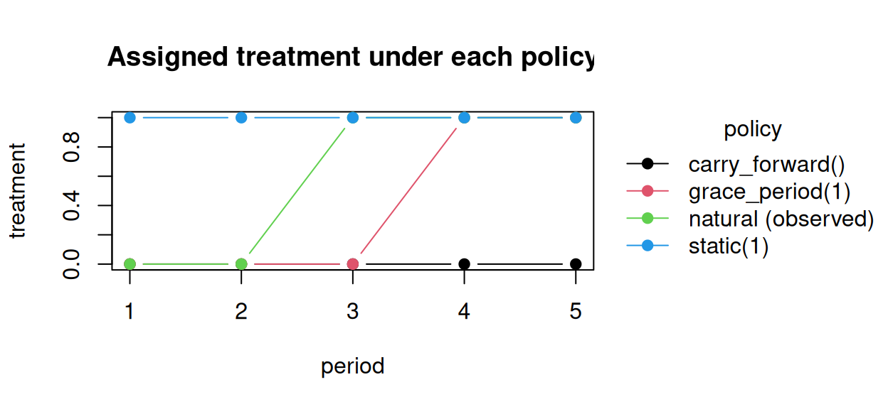
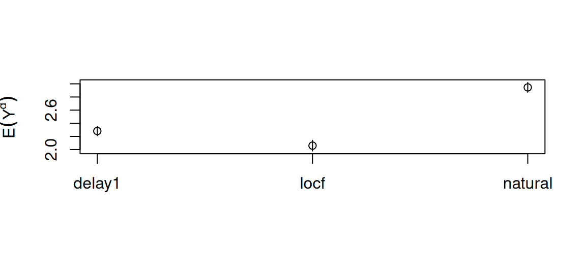

Code
library(causatr)
library(tinytable)
library(tinyplot)Most interventions assign treatment as a function of covariates — static(1) ignores everything, dynamic(rule) reads the covariate history, shift(δ) nudges the observed value. Natural-history modified treatment policies (G-LMTPs; (Díaz et al. 2026)) are different: the treatment assigned at time t depends on the natural value of treatment — the treatment a patient would take absent the intervention — at t and at earlier periods.
The motivating example is a grace period or delay: “postpone treatment initiation by one period relative to when the patient would naturally start.” To even define that intervention you need the patient’s natural initiation time, which is a counterfactual quantity.
This vignette explains what these policies are, why they cannot be written as dynamic() rules, how causatr estimates them with an augmented-data sequential regression, and how the estimator relates to LMTPs and to natural-value IPW.
Write \(A_t\) for treatment at period t and \(L_t\) for time-varying covariates. Under a longitudinal regime d, the natural value \(A_t(\bar A^d_{t-1})\) is the treatment that would be observed at t if the intervention were stopped just before t, given the regime was followed through t−1. It is the formal version of “what the patient would do on their own.”
shift(), scale_by(), threshold() are of this kind.The cleanest way to see the difference is to follow one patient whose natural (untreated-course) treatment path initiates at period 3 and stays on (absorbing): \(\bar A = (0, 0, 1, 1, 1)\).
nat <- c(0, 0, 1, 1, 1) # natural / observed treatment path
traj <- rbind(
data.frame(t = 1:5, A = nat, policy = "natural (observed)"),
data.frame(t = 1:5, A = rep(1, 5), policy = "static(1)"),
data.frame(t = 1:5, A = c(0, 0, 0, 1, 1), policy = "grace_period(1)"),
data.frame(t = 1:5, A = rep(nat[1], 5), policy = "carry_forward()")
)
with(traj, tinyplot(
A ~ t | policy,
type = "b", pch = 19,
ylab = "treatment", xlab = "period",
main = "Assigned treatment under each policy"
))
static(1) ignores the natural value; grace_period(1) delays the natural initiation by one period; carry_forward() freezes everyone at their baseline level (here 0).
static(1) and carry_forward() are flat — they do not read the natural value. grace_period(1) tracks the natural path but shifted one period later: that delay is the estimand. Crucially, the delay is defined relative to the patient’s own (counterfactual) initiation time, which is exactly what makes it a natural-history policy.
dynamic() ruleIt is tempting to write the delay as dynamic(\(data, trt) data$lag1_A) — “set this period’s treatment to last period’s.” This is wrong, and it fails silently. causatr’s ICE recursion conditions on the observed lagged treatment (lag1_A), but under the delay the natural value at t differs from the observed value the moment the policy has perturbed the trajectory (treatment-state feedback). The rule runs without error and returns a number — just the wrong causal estimand.
Here is the gap on a simulated absorbing-treatment process with covariate feedback (so the natural history under the regime genuinely diverges from the observed history):
set.seed(1)
n <- 2500L
tau <- 4L
L0 <- rnorm(n)
A <- matrix(0L, n, tau)
L <- matrix(0, n, tau)
Lprev <- L0
Aprev <- integer(n)
for (t in seq_len(tau)) {
Lt <- if (t == 1L) 0.5 * L0 + rnorm(n) else 0.5 * Lprev + 0.8 * Aprev + rnorm(n)
At <- ifelse(Aprev == 1L, 1L, rbinom(n, 1L, plogis(-1 + 0.5 * Lt)))
A[, t] <- At; L[, t] <- Lt; Lprev <- Lt; Aprev <- At
}
Y <- 1 + 0.8 * rowSums(A) + 0.4 * L[, tau] - 0.5 * L0 + rnorm(n)
d <- data.frame(
id = rep(seq_len(n), each = tau), time = rep(seq_len(tau), n),
L0 = rep(L0, each = tau), A = as.vector(t(A)), L = as.vector(t(L)),
Y = NA_real_
)
d$Y[d$time == tau] <- Y
fit <- causat(
d, outcome = "Y", treatment = "A",
confounders = ~ L0, confounders_tv = ~ L,
id = "id", time = "time", estimator = "gcomp", history = Inf
)
#> Warning: `model_fn` not specified; defaulting to `stats::glm`.
#> ℹ Set `model_fn` explicitly (e.g. `model_fn = stats::glm` or `model_fn = mgcv::gam`).
# Correct: natural-history engine.
mu_grace <- contrast(
fit, list(delay1 = grace_period(1L)),
ci_method = "bootstrap", n_boot = 100L
)$estimates$estimate[1]
# Wrong: a dynamic() rule that reads the OBSERVED lag.
naive <- dynamic(function(data, trt) {
v <- data$lag1_A; v[is.na(v)] <- 0L; v
})
mu_naive <- contrast(
fit, list(naive = naive), ci_method = "bootstrap", n_boot = 2L
)$estimates$estimate[1]
c(grace_period = mu_grace, naive_dynamic_lag = mu_naive)
#> grace_period naive_dynamic_lag
#> 2.281738 1.003515On this data generating process the true one-period-delay mean is ≈ 2.30; the augmented engine recovers it to within ~1%, while the naive dynamic(lag1_A) rule is off by tens of percent. The tests/testthat/test-glmtp.R suite pins this against the forward-simulation truth and replicates the Díaz et al. (2026) Section-6 delay result.
The standard sequential-regression g-formula breaks for these policies: at a backward integration step it would need to set one past treatment to two values at once — the value it conditions on (in \(P(a_{t+1}\mid a_t)\)) and the value the policy feeds forward (in \(d_{t+1}(\dots, a_t)\)).
The fix (the paper’s augmented data) is to decouple the two. Each observation is replicated once per possible natural-treatment-history sequence \(\bar s_t\), which is carried as a label through the backward recursion:
| original row | natural-history label \(\bar s_t\) | response used |
|---|---|---|
| patient i | \((0, 0)\) | \(q_{t+1}((0,0), A_{t+1,i}, H_{t+1,i})\) |
| patient i | \((0, 1)\) | \(q_{t+1}((0,1), A_{t+1,i}, H_{t+1,i})\) |
| patient i | \((1, 0)\) | \(q_{t+1}((1,0), A_{t+1,i}, H_{t+1,i})\) |
| patient i | \((1, 1)\) | \(q_{t+1}((1,1), A_{t+1,i}, H_{t+1,i})\) |
A separate outcome model is fit per label (so the conditioning value and the policy-input value never collide), then the policy is applied at prediction time. causatr’s parametric plug-in is \(\sqrt n\)-consistent under correct specification, with ID-cluster bootstrap inference. The treatment lag columns keep their observed values (they are the conditioning history); only the label carries the counterfactual natural history — that decoupling is the whole trick.
grace_period(window) delays initiation; carry_forward() holds everyone at their baseline level. Both need a longitudinal g-computation fit with a discrete treatment, and use the ID-cluster bootstrap.
| intervention | estimate | se | ci_lower | ci_upper |
|---|---|---|---|---|
| delay1 | 2.281738 | 0.03665249 | 2.209763 | 2.359176 |
| locf | 2.059251 | 0.04147649 | 1.975603 | 2.153217 |
| natural | 2.946063 | 0.03767625 | 2.864486 | 3.016399 |

Delaying initiation lowers the counterfactual mean relative to the natural course (fewer treated person-periods); carry-forward (hold at baseline) lowers it further.
Natural-value interventions have a lineage. The table below places the causatr G-LMTP engine alongside the standard LMTP framework and the original IPW treatment.
| Young et al. (2014) | LMTP (Díaz et al. 2023) | G-LMTP (Díaz et al. 2026) | |
|---|---|---|---|
| Policy reads | natural value (foundational) | contemporaneous natural value \(A_t\) + \(H_t\) | natural-value history \(\bar A_t\) + \(H_t\) |
| Estimation | IPW (density ratio \(g^d/g\)) | g-comp / IPW / doubly-robust TMLE/SDR | augmented-data sequential regression |
| In causatr | IPW engine (shift/scale_by/ipsi) |
IPW engine | gcomp engine (grace_period/carry_forward) |
Two practical points:
lmtp is not a valid oracle here. The lmtp package applies its shift once to the observed data, computing the standard LMTP — which differs from the natural-history target whenever the policy has perturbed the trajectory. The correct reference is forward Monte-Carlo simulation of the natural-history regime (the paper’s Proposition 1), which the test suite uses.shift() / scale_by() are the continuous MTPs); the augmented engine handles binary and ordinal/count. Multivariate (vector-valued) treatment is also rejected (causatr_glmtp_multivariate): the paper develops the augmentation for a scalar exposure only, and a joint discrete support would enumerate the joint cardinality raised to the number of periods — intractable, and the limitation the paper’s own conclusion flags.grace_period() / carry_forward() are rejected under IPW / AIPW / matching and for point treatments.ci_method = "bootstrap" (ID-cluster) and ci_method = "sandwich" (analytic per-(step, label) M-estimation) are supported.cap_escalation()) and other nonlinear ordered policies are estimated consistently once the dose enters the per-step model flexibly — see Flexible dose models below.By default the treatment enters every per-step outcome model as a bare numeric main effect. For a binary treatment that is exactly saturated, but for an ordered / ordinal dose a single linear slope can misspecify a non-monotone or kinked counterfactual response — the canonical case being a dose-escalation cap, whose policy is piecewise-linear in the dose. The bare-numeric plug-in then carries a small but persistent asymptotic bias even though the augmented recursion is exactly correct.
cap_escalation(delta) is the natural-history policy for exactly this case: it caps the per-period increase of the natural dose at delta, comparing the natural dose at \(t\) with the natural dose at \(t-1\). treatment_form lets the dose enter the per-step model via a transformed term, while the policy still sets the numeric dose column — only the model’s design term changes. Here is a worked example on an ordinal dose {0, 1, 2} that escalates over three periods:
set.seed(2)
n <- 2000L; tau <- 3L; m <- 2L # dose levels {0, 1, 2}
L0 <- rnorm(n)
dose <- matrix(0L, n, tau); L <- matrix(0, n, tau)
Lprev <- L0; Aprev <- integer(n)
for (t in seq_len(tau)) {
Lt <- 0.5 * Lprev + 0.3 * Aprev + rnorm(n)
step <- rbinom(n, 2L, plogis(-0.2 + 0.6 * Lt))
At <- pmin(m, Aprev + step) # natural dose escalates, capped at 2
dose[, t] <- At; L[, t] <- Lt; Lprev <- Lt; Aprev <- At
}
Y <- 1 + 0.7 * rowSums(dose) + 0.4 * L[, tau] - 0.5 * L0 + rnorm(n)
dose_data <- data.frame(
id = rep(seq_len(n), each = tau), t = rep(seq_len(tau), n),
L0 = rep(L0, each = tau), dose = as.vector(t(dose)),
L = as.vector(t(L)), Y = NA_real_
)
dose_data$Y[dose_data$t == tau] <- Y
fit_cap <- causat(
dose_data, outcome = "Y", treatment = "dose",
confounders = ~ L0, confounders_tv = ~ L,
id = "id", time = "t", estimator = "gcomp", history = Inf,
treatment_form = ~ factor(dose) # each dose level its own coefficient
)
#> Warning: `model_fn` not specified; defaulting to `stats::glm`.
#> ℹ Set `model_fn` explicitly (e.g. `model_fn = stats::glm` or `model_fn = mgcv::gam`).
res_cap <- contrast(
fit_cap,
interventions = list(cap1 = cap_escalation(1), natural = NULL),
reference = "natural", ci_method = "bootstrap", n_boot = 100L
)
tt(res_cap$estimates)| intervention | estimate | se | ci_lower | ci_upper |
|---|---|---|---|---|
| cap1 | 4.100219 | 0.03991312 | 3.995161 | 4.156022 |
| natural | 4.181199 | 0.03954115 | 4.079189 | 4.234457 |
Capping the per-period escalation at one level lowers the counterfactual mean relative to the natural course (a capped patient accrues fewer high-dose periods). With ~ factor(dose) each dose level carries its own coefficient, so the kinked capped-dose response is recovered to sampling error rather than fit through one slope; the bare-numeric default would instead carry a small but seed-stable bias when the cap binds. Lag terms expand automatically (factor(dose) → factor(lag1_dose)). The flexible term is longitudinal-g-computation-only and benefits standard ICE regimes (static / shift / dynamic) as much as natural-history policies. Under factor(dose) an intervention must keep the dose within the observed levels (a new level makes prediction fail); splines::ns(dose, df) extrapolates smoothly.
---
title: "Natural-history modified treatment policies (grace periods)"
code-fold: show
code-tools: true
vignette: >
%\VignetteIndexEntry{Natural-history modified treatment policies (grace periods)}
%\VignetteEngine{quarto::html}
%\VignetteEncoding{UTF-8}
bibliography: references.bib
---
```{r}
#| include: false
knitr::opts_chunk$set(collapse = TRUE, comment = "#>")
```
```{r}
#| message: false
library(causatr)
library(tinytable)
library(tinyplot)
```
Most interventions assign treatment as a function of **covariates** — `static(1)`
ignores everything, `dynamic(rule)` reads the covariate history, `shift(δ)` nudges
the observed value. **Natural-history modified treatment policies** (G-LMTPs;
[@diaz2026glmtp]) are different: the treatment assigned
at time *t* depends on the **natural value of treatment** — the treatment a
patient *would* take absent the intervention — at *t* **and at earlier periods**.
The motivating example is a **grace period** or **delay**: "postpone treatment
initiation by one period relative to when the patient would naturally start." To
even define that intervention you need the patient's natural initiation time,
which is a counterfactual quantity.
This vignette explains what these policies are, why they cannot be written as
`dynamic()` rules, how causatr estimates them with an augmented-data sequential
regression, and how the estimator relates to LMTPs and to natural-value IPW.
## The natural value of treatment
Write $A_t$ for treatment at period *t* and $L_t$ for time-varying covariates.
Under a longitudinal regime *d*, the **natural value** $A_t(\bar A^d_{t-1})$ is
the treatment that *would be observed* at *t* if the intervention were stopped
just before *t*, given the regime was followed through *t−1*. It is the formal
version of "what the patient would do on their own."
- A **standard LMTP** [@diaz2023lmtp] assigns $A^d_t = d_t(A_t, H_t)$ — it may
use the *contemporaneous* natural value $A_t$ and the covariate history $H_t$.
`shift()`, `scale_by()`, `threshold()` are of this kind.
- A **natural-history MTP (G-LMTP)** assigns
$A^d_t = d_t(\bar A_t, H_t)$ — it may use the *entire natural-value history*
$\bar A_t = (A_1, A_2(A^d_1), \dots, A_t(\bar A^d_{t-1}))$. Grace periods,
delays, and dose-escalation caps need this.
## What the policies assign
The cleanest way to see the difference is to follow one patient whose natural
(untreated-course) treatment path initiates at period 3 and stays on
(absorbing): $\bar A = (0, 0, 1, 1, 1)$.
```{r}
#| label: fig-trajectories
#| fig-cap: "Treatment assigned to one patient (natural initiation at t = 3) under four policies. `static(1)` ignores the natural value; `grace_period(1)` delays the natural initiation by one period; `carry_forward()` freezes everyone at their baseline level (here 0)."
#| fig-width: 6.5
#| fig-height: 3
nat <- c(0, 0, 1, 1, 1) # natural / observed treatment path
traj <- rbind(
data.frame(t = 1:5, A = nat, policy = "natural (observed)"),
data.frame(t = 1:5, A = rep(1, 5), policy = "static(1)"),
data.frame(t = 1:5, A = c(0, 0, 0, 1, 1), policy = "grace_period(1)"),
data.frame(t = 1:5, A = rep(nat[1], 5), policy = "carry_forward()")
)
with(traj, tinyplot(
A ~ t | policy,
type = "b", pch = 19,
ylab = "treatment", xlab = "period",
main = "Assigned treatment under each policy"
))
```
`static(1)` and `carry_forward()` are flat — they do not read the natural value.
`grace_period(1)` tracks the natural path but shifted one period later: that
*delay* is the estimand. Crucially, the delay is defined relative to the
patient's **own** (counterfactual) initiation time, which is exactly what makes
it a natural-history policy.
## Why this is not a `dynamic()` rule
It is tempting to write the delay as `dynamic(\(data, trt) data$lag1_A)` — "set
this period's treatment to last period's." **This is wrong**, and it fails
silently. causatr's ICE recursion conditions on the *observed* lagged treatment
(`lag1_A`), but under the delay the natural value at *t* differs from the
observed value the moment the policy has perturbed the trajectory
(treatment-state feedback). The rule runs without error and returns a number —
just the wrong causal estimand.
Here is the gap on a simulated absorbing-treatment process with covariate
feedback (so the natural history under the regime genuinely diverges from the
observed history):
```{r}
set.seed(1)
n <- 2500L
tau <- 4L
L0 <- rnorm(n)
A <- matrix(0L, n, tau)
L <- matrix(0, n, tau)
Lprev <- L0
Aprev <- integer(n)
for (t in seq_len(tau)) {
Lt <- if (t == 1L) 0.5 * L0 + rnorm(n) else 0.5 * Lprev + 0.8 * Aprev + rnorm(n)
At <- ifelse(Aprev == 1L, 1L, rbinom(n, 1L, plogis(-1 + 0.5 * Lt)))
A[, t] <- At; L[, t] <- Lt; Lprev <- Lt; Aprev <- At
}
Y <- 1 + 0.8 * rowSums(A) + 0.4 * L[, tau] - 0.5 * L0 + rnorm(n)
d <- data.frame(
id = rep(seq_len(n), each = tau), time = rep(seq_len(tau), n),
L0 = rep(L0, each = tau), A = as.vector(t(A)), L = as.vector(t(L)),
Y = NA_real_
)
d$Y[d$time == tau] <- Y
fit <- causat(
d, outcome = "Y", treatment = "A",
confounders = ~ L0, confounders_tv = ~ L,
id = "id", time = "time", estimator = "gcomp", history = Inf
)
# Correct: natural-history engine.
mu_grace <- contrast(
fit, list(delay1 = grace_period(1L)),
ci_method = "bootstrap", n_boot = 100L
)$estimates$estimate[1]
# Wrong: a dynamic() rule that reads the OBSERVED lag.
naive <- dynamic(function(data, trt) {
v <- data$lag1_A; v[is.na(v)] <- 0L; v
})
mu_naive <- contrast(
fit, list(naive = naive), ci_method = "bootstrap", n_boot = 2L
)$estimates$estimate[1]
c(grace_period = mu_grace, naive_dynamic_lag = mu_naive)
```
On this data generating process the true one-period-delay mean is ≈ 2.30; the
augmented engine recovers it to within ~1%, while the naive `dynamic(lag1_A)`
rule is off by tens of percent. The `tests/testthat/test-glmtp.R` suite pins
this against the forward-simulation truth and replicates the @diaz2026glmtp
Section-6 delay result.
## How causatr estimates it: augmented data
The standard sequential-regression g-formula breaks for these policies: at a
backward integration step it would need to set one past treatment to **two**
values at once — the value it conditions on (in $P(a_{t+1}\mid a_t)$) and the
value the policy feeds forward (in $d_{t+1}(\dots, a_t)$).
The fix (the paper's augmented data) is to **decouple** the two. Each
observation is replicated once per possible natural-treatment-history sequence
$\bar s_t$, which is carried as a *label* through the backward recursion:
| original row | natural-history label $\bar s_t$ | response used |
|---|---|---|
| patient *i* | $(0, 0)$ | $q_{t+1}((0,0), A_{t+1,i}, H_{t+1,i})$ |
| patient *i* | $(0, 1)$ | $q_{t+1}((0,1), A_{t+1,i}, H_{t+1,i})$ |
| patient *i* | $(1, 0)$ | $q_{t+1}((1,0), A_{t+1,i}, H_{t+1,i})$ |
| patient *i* | $(1, 1)$ | $q_{t+1}((1,1), A_{t+1,i}, H_{t+1,i})$ |
A separate outcome model is fit per label (so the conditioning value and the
policy-input value never collide), then the policy is applied at prediction
time. causatr's parametric plug-in is $\sqrt n$-consistent under correct
specification, with ID-cluster bootstrap inference. The treatment **lag columns
keep their observed values** (they are the conditioning history); only the
*label* carries the counterfactual natural history — that decoupling is the
whole trick.
## Worked example
`grace_period(window)` delays initiation; `carry_forward()` holds everyone at
their baseline level. Both need a longitudinal g-computation fit with a discrete
treatment, and use the ID-cluster bootstrap.
```{r}
#| label: fig-estimates
#| fig-cap: "Counterfactual means under a one-period delay and carry-forward, vs the natural course, with bootstrap 95% CIs."
#| fig-width: 6
#| fig-height: 2.6
res <- contrast(
fit,
interventions = list(
delay1 = grace_period(1L),
locf = carry_forward(),
natural = NULL
),
reference = "natural",
ci_method = "bootstrap", n_boot = 200L
)
tt(res$estimates)
est <- res$estimates
with(est, tinyplot(
x = factor(intervention, levels = intervention), y = estimate,
ymin = ci_lower, ymax = ci_upper,
type = "pointrange", ylab = expression(E(Y^d)), xlab = ""
))
```
Delaying initiation lowers the counterfactual mean relative to the natural
course (fewer treated person-periods); carry-forward (hold at baseline) lowers
it further.
## Relationship to LMTPs and natural-value IPW
Natural-value interventions have a lineage. The table below places the causatr
G-LMTP engine alongside the standard LMTP framework and the original IPW
treatment.
| | @young2014natural | LMTP [@diaz2023lmtp] | G-LMTP [@diaz2026glmtp] |
|---|---|---|---|
| Policy reads | natural value (foundational) | **contemporaneous** natural value $A_t$ + $H_t$ | natural-value **history** $\bar A_t$ + $H_t$ |
| Estimation | IPW (density ratio $g^d/g$) | g-comp / IPW / **doubly-robust** TMLE/SDR | **augmented-data** sequential regression |
| In causatr | IPW engine (`shift`/`scale_by`/`ipsi`) | IPW engine | **gcomp** engine (`grace_period`/`carry_forward`) |
Two practical points:
- **`lmtp` is not a valid oracle here.** The `lmtp` package applies its shift
once to the observed data, computing the *standard* LMTP — which differs from
the natural-history target whenever the policy has perturbed the trajectory.
The correct reference is forward Monte-Carlo simulation of the natural-history
regime (the paper's Proposition 1), which the test suite uses.
- **Why G-LMTP is gcomp-only in causatr.** A Young-style IPW estimator for a
*history-dependent* natural-value policy needs the ratio of the whole-trajectory
natural-history density to the observed density; positivity is fragile and the
variance explodes. The augmented g-computation route sidesteps this — which is
why grace periods route through the gcomp engine, while the contemporaneous
natural-value MTPs (shift/scale/ipsi) use the IPW density-ratio engine.
## Scope and limits
- **Single scalar discrete treatment only.** The augmentation enumerates the
natural-history support, which is finite only for a discrete exposure. Continuous
treatments are rejected (`shift()` / `scale_by()` are the continuous MTPs); the
augmented engine handles binary **and** ordinal/count. Multivariate
(vector-valued) treatment is also rejected (`causatr_glmtp_multivariate`): the
paper develops the augmentation for a scalar exposure only, and a joint discrete
support would enumerate the joint cardinality raised to the number of periods —
intractable, and the limitation the paper's own conclusion flags.
- **Longitudinal g-computation only.** `grace_period()` / `carry_forward()` are
rejected under IPW / AIPW / matching and for point treatments.
- **Bootstrap *and* sandwich variance.** Both `ci_method = "bootstrap"`
(ID-cluster) and `ci_method = "sandwich"` (analytic per-(step, label)
M-estimation) are supported.
- **Dose-escalation caps** (`cap_escalation()`) and other nonlinear ordered
policies are estimated consistently once the dose enters the per-step model
flexibly — see *Flexible dose models* below.
## Flexible dose models for ordered treatments
By default the treatment enters every per-step outcome model as a **bare numeric**
main effect. For a binary treatment that is exactly saturated, but for an
**ordered / ordinal dose** a single linear slope can misspecify a non-monotone or
*kinked* counterfactual response — the canonical case being a *dose-escalation
cap*, whose policy is piecewise-linear in the dose. The bare-numeric plug-in then
carries a small but persistent asymptotic bias even though the augmented recursion
is exactly correct.
`cap_escalation(delta)` is the natural-history policy for exactly this case: it
caps the per-period increase of the **natural** dose at `delta`, comparing the
natural dose at $t$ with the natural dose at $t-1$. `treatment_form` lets the dose
enter the per-step model via a transformed term, while the policy still sets the
*numeric* dose column — only the model's design term changes. Here is a worked
example on an ordinal dose `{0, 1, 2}` that escalates over three periods:
```{r}
#| label: cap-escalation
set.seed(2)
n <- 2000L; tau <- 3L; m <- 2L # dose levels {0, 1, 2}
L0 <- rnorm(n)
dose <- matrix(0L, n, tau); L <- matrix(0, n, tau)
Lprev <- L0; Aprev <- integer(n)
for (t in seq_len(tau)) {
Lt <- 0.5 * Lprev + 0.3 * Aprev + rnorm(n)
step <- rbinom(n, 2L, plogis(-0.2 + 0.6 * Lt))
At <- pmin(m, Aprev + step) # natural dose escalates, capped at 2
dose[, t] <- At; L[, t] <- Lt; Lprev <- Lt; Aprev <- At
}
Y <- 1 + 0.7 * rowSums(dose) + 0.4 * L[, tau] - 0.5 * L0 + rnorm(n)
dose_data <- data.frame(
id = rep(seq_len(n), each = tau), t = rep(seq_len(tau), n),
L0 = rep(L0, each = tau), dose = as.vector(t(dose)),
L = as.vector(t(L)), Y = NA_real_
)
dose_data$Y[dose_data$t == tau] <- Y
fit_cap <- causat(
dose_data, outcome = "Y", treatment = "dose",
confounders = ~ L0, confounders_tv = ~ L,
id = "id", time = "t", estimator = "gcomp", history = Inf,
treatment_form = ~ factor(dose) # each dose level its own coefficient
)
res_cap <- contrast(
fit_cap,
interventions = list(cap1 = cap_escalation(1), natural = NULL),
reference = "natural", ci_method = "bootstrap", n_boot = 100L
)
tt(res_cap$estimates)
```
Capping the per-period escalation at one level lowers the counterfactual mean
relative to the natural course (a capped patient accrues fewer high-dose
periods). With `~ factor(dose)` each dose level carries its own coefficient, so
the kinked capped-dose response is recovered to sampling error rather than fit
through one slope; the bare-numeric default would instead carry a small but
seed-stable bias when the cap binds. Lag terms expand automatically
(`factor(dose)` → `factor(lag1_dose)`). The flexible term is
longitudinal-g-computation-only and benefits standard ICE regimes (`static` /
`shift` / `dynamic`) as much as natural-history policies. Under `factor(dose)`
an intervention must keep the dose within the observed levels (a new level makes
prediction fail); `splines::ns(dose, df)` extrapolates smoothly.
## References
::: {#refs}
:::